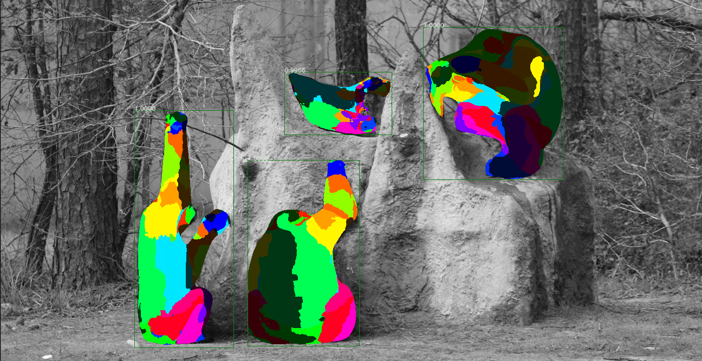

DensePose¶
Background¶
DensePose (Neverova et al, 2021) is a model published by Facebook AI Research that can be used to get segmentations for animals that appear in videos. The model was trained on the following animals, but often works for other species as well: bear, cat, cow, dog, elephant, giraffe, horse, sheep, zebra. Here's an example of the segmentation output for a frame:

Additionally, the model provides mapping of the segmentation output to specific anatomy for chimpanzees. This can be helpful for determining the orientation of chimpanzees in videos and for understanding their behaviors. Here is an example of what that output looks like:

For more information on the algorithms and outputs of the DensePose model, see the Facebook DensePose Github Repository.
Outputs¶
The Zamba package supports running DensePose on videos to generate three types of outputs:
- A
.jsonfile with details of segmentations per video frame. - A
.mp4file where the original video has the segmentation rendered on top of animal so that the output can be visually inspected. - A
.csvthat contains the height and width of the bounding box around each chimpanzee, the frame number and timestamp of the observation, and the percentage of pixels in the bounding box that correspond with each anatomical part. This is specified by adding--output-type chimp_anatomy.
Running the DensePose model is fairly computationally intensive. It is recommended to run the model at a relatively low framerate (e.g., 1 frame per second) to generate outputs for a video. JSON output files can also be quite large because they contain the full embedding. These are not written out by default.
Installation¶
In order to use the DensePose model, you must have PyTorch already installed on your system. Then you must install the densepose extra:
pip install torch
pip install "https://github.com/drivendataorg/zamba/releases/latest/download/zamba.tar.gz#egg=zamba[densepose]"
Running DensePose¶
Once that is done, here's how to run the DensePose model:
# create a segmentation output video for each input video in PATH_TO_VIDEOS
zamba densepose --data-dir PATH_TO_VIDEOS --render-output
from zamba.models.densepose import DensePoseConfig
densepose_conf = DensePoseConfig(data_dir="PATH_TO_VIDEOS", render_output=True)
densepose_conf.run_model()
Getting help¶
To see all of the available options, run zamba densepose --help.
$ zamba densepose --help
Usage: zamba densepose [OPTIONS]
Run densepose algorithm on videos.
If an argument is specified in both the command line and in a yaml file, the
command line input will take precedence.
Options:
--data-dir PATH Path to video or image file or folder
containing images/videos.
--filepaths PATH Path to csv containing `filepath` column
with videos.
--save-dir PATH An optional directory for saving the output.
Defaults to the current working directory.
--config PATH Specify options using yaml configuration
file instead of through command line
options.
--fps FLOAT Number of frames per second to process.
Defaults to 1.0 (1 frame per second).
[default: 1.0]
--output-type [segmentation|chimp_anatomy]
If 'chimp_anatomy' will apply anatomy model
from densepose to the rendering and create a
CSV with the anatomy visible in each frame.
If 'segmentation', will just output the
segmented area where an animal is
identified, which works for more species
than chimpanzees. [default: chimp_anatomy]
--render-output / --no-render-output
If True, generate an output image or video
with either the segmentation or anatomy
rendered depending on the `output_type` that
is chosen. [default: no-render-output]
--weight-download-region [us|eu|asia]
Server region for downloading weights.
--cache-dir PATH Path to directory for model weights.
Alternatively, specify with environment
variable `ZAMBA_CACHE_DIR`. If not
specified, user's cache directory is used.
-y, --yes Skip confirmation of configuration and
proceed right to prediction.
--help Show this message and exit.